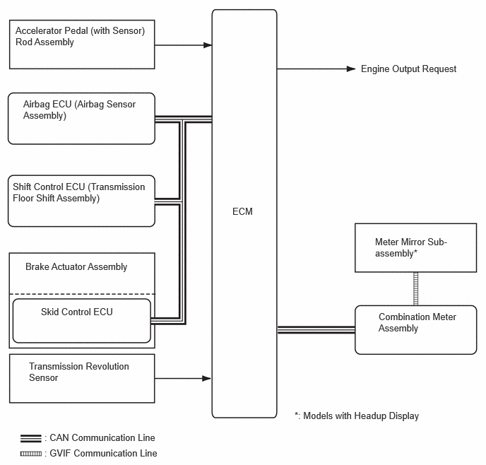
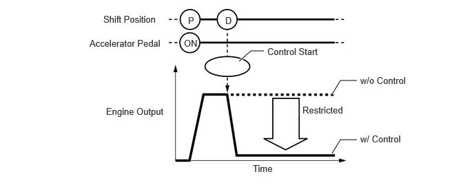
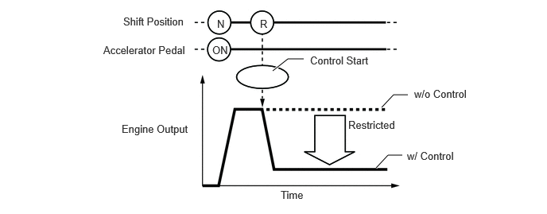

- Shift position is R.
- Accelerator pedal is depressed excessively.
| Last Modified: 10-07-2025 | 6.11:8.1.0 | Doc ID: NM100000002GYB1 |
| Model Year Start: 2024 | Model: Tacoma | Prod Date Range: [12/2023 - ] |
| Title: T24A-FTS (ENGINE CONTROL): SFI SYSTEM (for Gasoline Model): DRIVE START CONTROL; 2024 - 2026 MY Tacoma [12/2023 - ] | ||
DRIVE START CONTROL
FUNCTION
(a) When abnormal driver accelerator pedal and shift operations are detected, the system restricts the engine output and informs the driver.
HINT:
When the system is operating, even if the driver depresses and holds the accelerator pedal, engine output may increase on an uphill slope and decrease on a downhill slope. This behavior allows the system to restrict the vehicle speed and acceleration below the predetermined limit on slopes and is not a malfunction.
(b) Control during Reverse Operation
(1) Responds to excessive depression of the accelerator pedal while operating in reverse.
(2) Corrects engine output according to the road grade.
|
Control Start Conditions (When all of the following conditions are met, control starts.) |
|
|
Control Operation |
Restricts the engine output so the vehicle speed and acceleration are at or below a certain level. |
|
Control Stop Conditions |
|

(c) Control during Manual Shift Operation
(1) Responds to shift operations with the accelerator pedal depressed.
(2) Changes the limit amount according to the manual shift operation pattern.
(3) Corrects engine output according to the road grade.
- Control when Starting Off from a Parked Position
Control Start Conditions (When all of the following conditions are met, control starts.)
- Shift position is changed from P to D/S, or P to R.
- Accelerator opening angle is approximately 1/5 or higher.
Control Operation
Restricts the engine output so the vehicle speed and acceleration are at or below a certain level.
Control Stop Conditions
- Shift position is P or N.
- Accelerator pedal is fully released.
- Control during Other Situations
Control Start Conditions (When all of the following conditions are met, control starts.)
- Shift position is changed from R to D/S, D/S to R, or N to R.
- Accelerator opening angle is approximately 1/5 or higher.
Control Operation
Restricts the engine output so the vehicle speed and acceleration are at or below a certain level.
Control Stop Conditions
- Shift position is P or N.
- Accelerator pedal is fully released.
HINT:
- The engine output restraint level differs in the above 2 situations.
- During control while a manual shift operation is performed (from control start until the accelerator pedal is released), the system informs the driver of the control via the multi-information display.
- When the TRAC is turned off, the drive
start control does not operate. Also, the
system will not operate in the following
conditions:
- When Trail Mode is turned on